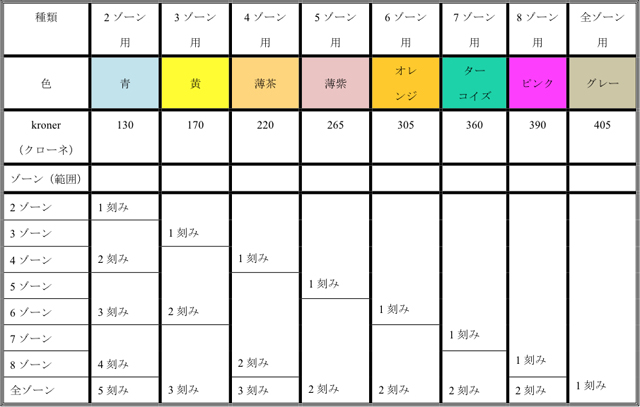
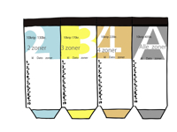

デンマークでバスや電車に乗る場合に日本とは事情が異なることがあります．まず，電車の駅には改札がありません．つまり，駅のホームに自由に出入りすることができますし，切符は回収されません．また，コペンハーゲンを中心とした首都圏に限って言いますと，バスの切符も回収されません．また，切符は有効時間中は何度でも乗り降りして使うことができます．例えば一番安い2ゾーン用の切符だと2ゾーン内を1時間乗り放題ですので，コペンハーゲンの中心部だと実際に何度でも移動に利用することが可能です．
30年ほど前まではバスの切符をバスの運転手からいちいち購入することがふつうでしたし，回数券を買う場合でも，その回数券はpoletというコインになっていましたので，結局はそのコインで切符を求めることになっていました．そしてバスを降りる際に，自分はもうその後バスには乗らないけれども，まだ切符の有効時間が残っている場合には，バス停のプレートや学生寮のエレベーターのドアのところにその切符を貼り付けて，誰か別の人がその切符を利用できるようにと配慮する若者が大勢いたものです．しかしこの若者文化は，1980年代初頭のklippekort ＜回数券カード＞ の登場によって幕を閉じました．
このように刻みを入れた時刻が表示されます．ちなみに一番右は，「自転車用Klippekort」．自転車を電車に持ち込むときに必要です．
klippekortとは 4.5 cm × 12.5 cm 大の厚紙のカードで，これを機械に差し込むと，刻みが入ると同時に，第何番目のゾーンで何月何日何時に刻みが入ったかが記録されるようになったものです．
このklippekortだと10回分の刻みが入るようになっていますので，入れた刻みの有効期限が残っていても，まだ刻み分が残っている場合には，klippekortを他人に譲ることなどは起こらないわけです．
さてこのklippekortですが，コペンハーゲンを中心とした首都圏の場合には （コペンハーゲン周辺以外の地域にもそれぞれの地域のklppekortがあります），東北の端にヘルスィングウーア (Helsingør)，西北の端にフネステズ (Hundested)，西南の端にロスキレ (Roskilde) の少し西，南の端にクーイ (Køge) の少し南を置いた範囲で，全部で99のゾーンに分かれた地域で使うことができます．
切符販売機．ここでもゾーンを確認できるようにゾーン地図が．
切符の値段は，どのゾーンから出発して，いくつのゾーンを通って目的地に行くかで決まります．99のゾーンをすべて把握しておくことは不可能なので，刻みを入れる機械にゾーン分けを示した地図が描かれていて，自分がいくつのゾーンを通過しようとしているのかを自分で判断して，正しい数の刻みを入れなければなりません．
ネット上の利用上の注意書きにもあるように，「同じルートで往復してもゾーン数が異なることがある」など，ゾーンの数え方が分かりにくく，複雑なことがあります．ただ，ひとつの路線上だけを移動するのであれば，ゾーンの数え方は簡単なので，毎日の通学や通勤で利用するのには便利で，かなり安くつきます．
例えば，2ゾーンの切符は21クローネですが，2ゾーン用のklippekortは10回分で130クローネ（2009年12月現在）ですので，1回13クローネでとても割安です．何しろ切符をいちいち購入する必要がないので便利です．
この機械でカードに刻みを入れます．壊れていないといいですが！
klippekortは，このように安くて便利なのですが，特に久しぶりにデンマークを訪れた場合などには，刻みを入れることを忘れることがあります．その場合，600クローネ（2009年12月現在）の罰金！を取られます．また，刻みを入れる機械が故障していることもあります．機械の故障に気づかずに，刻みを入れようと奮闘していて，電車に乗り遅れることもありますので注意が必要です．
どのような種類のklippekortがあるのか下の表で見てみましょう．


Klippekortもゾーンごとに色分けされています．
切符とklippekortの有効時間：
2-3ゾーン：1時間
4-6ゾーン：1時間半
7-8および全ゾーン：2時間
ふつうの切符とklippekortの価格を比較してみましょう．（クローネ：2009年12月現在）
| ゾーン数 | 2 | 3 | 4 | 5 | 6 | 7 | 8 | 全て |
| ふつうの切符 | 21.- | 31.50 | 42.- | 52.50 | 63.- | 73.50 | 84.- | 94.50 |
| Klippekort | 130 | 170 | 220 | 265 | 305 | 360 | 390 | 405 |
コペンハーゲン中心部に住んでいる人は2ゾーン用の青色のklippekortで日常生活に十分ですが，4ゾーン分の刻みが必要なクランベンボー (Klampenborg) に行く時には，青色のklippekortで2つ刻みを入れれば良いわけです．そうすると4ゾーン用のふつうの切符は42クローネするところを，26クローネですむことになります．また，11ゾーンの移動が必要なヘルスィングウーア (Helsingør) に行くときには5つの刻みを入れれば良いわけです．そうすると全ゾーン用のふつうの切符は94.50クローネするところを，65クローネですむことになります．
一方，クランベンボーに住んでいる人がコペンハーゲンの中心部に通勤する場合には，日常は4ゾーン用の茶色のklippekortを利用するわけですが，コペンハーゲンからヘルスィングウーアに行こうとする時には，茶色のklippekortに3つの刻みを入れれば良いわけです．そうすると全ゾーン用のふつうの切符は94.50クローネするところを，66クローネですむことになります．